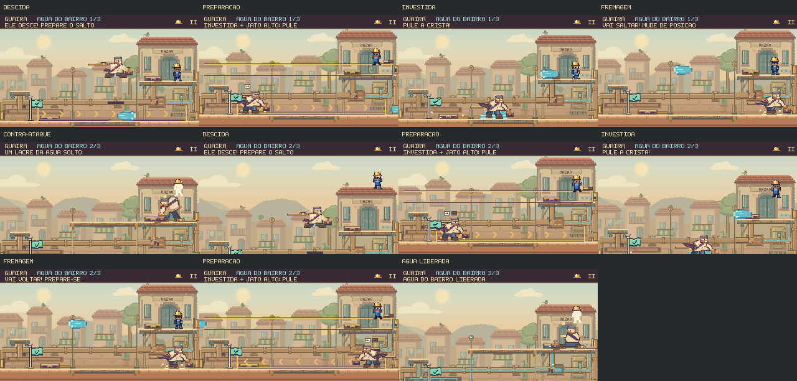

O Prefeito entra na arena.
Descida da passarela, investidas com mudança de direção e carimbadas na posição marcada. Os registros cortam a pressão; o Prefeito continua a perseguição. A água e o movimento passam a exigir respostas diferentes.
Ler a direção. Saltar. Reposicionar.
Execução completa pelo chão e pela passarela: 37,30 s. Os saltos evitam água que realmente causa dano. Captura a 30 fps, física a 60 Hz, sem áudio.
Preparação e compromisso. A direção fica definida antes da descida. As setas indicam o corredor; a crista ciano é o perigo ativo. A investida termina com frenagem visível.
Escalada no último lacre. O chefe freia, anuncia a volta e investe no sentido contrário. Depois vêm duas carimbadas, cada uma com seu próprio alvo fixo.
A passarela também exige atenção
Execução de 36,25 s. Se Feka está na passarela quando começa a perseguição, o chefe combina a investida com um jato alto anunciado. Essa decisão não muda durante a esquiva.

Cortar a água muda a luta
Uma sentada depois do disparo elimina o restante da salva, os jatos adicionais, as ondas e a descarga da emenda daquele ciclo. O chefe ainda desce, investe e salta. Depois do último impacto, é preciso abrir um registro novamente para levantar a passarela e alcançar as costas.
Os dois registros são usados nesta execução completa de 32,27 s. O corte economiza tempo e reduz os perigos hidráulicos sem eliminar a ofensiva física.
Esperar a descarga e recuperar uma oportunidade perdida
Uma abertura pode ser aproveitada com calma
37,23 s. Esperar a descarga continua sendo uma alternativa ao salto antecipado.
Perder um contra-ataque não trava a luta
52,48 s. A sequência seguinte muda, o jogador usa um registro tarde e ainda recebe o tempo de subida e contra-ataque.
Conferência no jogo
3.604 testes passaram, com 19 casos novos para a ofensiva. A compilação foi concluída. As cinco rotas passaram no navegador com teclado e toque simulado, pausa durante a perseguição e redução de movimento. A campanha normal foi concluída com gamepad simulado, retorno ao mapa e progresso preservado após recarregar.
Capturas e medidas · Validação desta rodada · Decisões e reprodução
Estas gravações são execuções ensaiadas. Elas demonstram os percursos possíveis e as regras de dano; não medem a dificuldade ou a diversão de uma primeira partida.